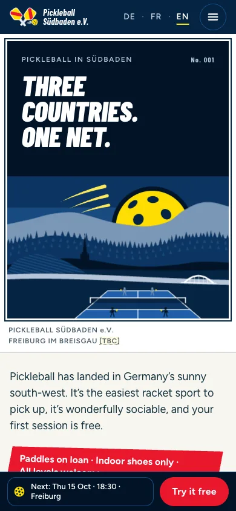

Concept A
Paddle Passport
A Südbaden travel poster for a sport. The pickleball rises like a sun over the Black Forest, the next sessions run on a station departures board, and newcomers collect stamps in a Paddle Passport before they join.
Preview image missing
a-paddle-passport/preview/en/desktop-fold.webpOpen the concept to see it live.

Preview missinga-paddle-passport/preview/en/mobile-fold.webp
- Homepage order
- Try-first The next sessions lead.
- Opening sections
- Poster hero with the next departures
- All sessions on the departures board
- The Paddle Passport for newcomers
- What is pickleball?
- Fonts
- Barlow Condensedheadlines and numbers Figtreetext and forms
- Leads with
- Flat illustration. Medium motion: the sunrise, the flipping board and the stamp.
- Photos
- 7 AI sample photos (shots 01, 03, 12, 13, 14, 15, 24) in postcard frames further down the page. The illustration still leads. See the whole page of Concept A

Strengths
- The strongest regional story. The Black Forest poster, the Rhine and the Baden-arms paddles say “our corner of Europe” at a glance, and the poster could be printed for town halls.
- Dates on the first screen on a computer. The departures board shows the next sessions and free spots right beside the headline. On a phone they follow the poster, and still come sooner than in any other concept.
- Every travel object has a job. Boarding passes are the session cards on phones and the booking confirmation, passport stamps turn taster visits into a game, and fare tickets carry the fees.
Trade-offs
- Many metaphors. Poster, board, passport, tickets and badges can tip into kitsch, and the illustration needs real design effort in production.
- It promises a lot early. “Three countries” is a big claim for a club that starts in one town, and a departures board only shines once there is a regular schedule.